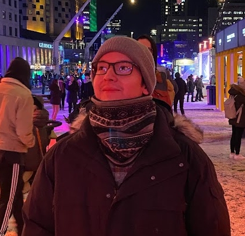

Sebastián Vega Perry
Técnico en Sonido y estudiante tanto de Desarrollo Front-end como de Periodismo.
Experiencia laboral
- MIRA-360
- 2019
- Producción de audio para contenido promocional. Edición, mezcla y masterización para plataformas digitales y radiales.
- Ucorp S.A.
- 2021
- Practicante en el área de comunicaciónes de la organización. Planificación y redacción de contenido para redes sociales.
- Canal TVU
- 2022
- Periodista pasante en el área de prensa. Redactor de contenido para televisión y voz en off.
Conocimientos técnicos
Desarrollo Front-end
HTML5
CSS3
Bootstrap
Wordpress
Producción de Audio
Pro Tools Avanzado
Reaper Avanzado
Estudios superiores
Duoc UC
2017 - 2019
Tecnología en Sonido.
Universidad de Concepción
2020 - actualidad
Licenciatura en Comunicación Social.
Reconocimientos y certificaciones
Duoc UC
Premio "Mejor Alumno 2020".
Gearbox UdeC
Bootcamp Ideas Lab 2022 completo.